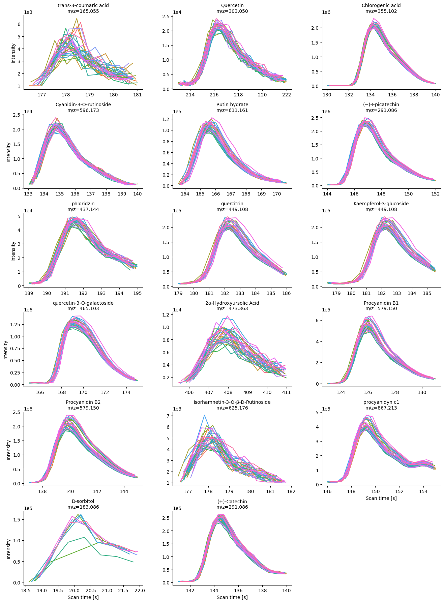

DT::datatable(target_neg)Using ms-mint for targeted peak integration of Mass Spec data
Using ms-mint for targeted peak integration
LC-MS
In this post, we will use ms-mint with the objective of integrated peak areas of identified phytochemicals present in apples
Goal of this notebook
This notebook has the objective to exemplify the use of targeted integration of phytochemicals that are present in untargeted metabolomics data of apple fruit reported in Bilbrey et al. (2022)
In this case, we are going to use only the quality control (QC) samples.
Importing python libraries
Importing python libraries
In this section, we will upload the required libraries in order to targeted integrate a series of phytochemicals found in apples fruits. The main library for this purpose is ms-mint which allows to integrate ions of interest. In our case, each ion of interest refers to a specific phytochemical. For example, chlorogenic acid with a monoisotopic mass of 354.0950 Da. Thus, the ion in positive ionization mode will be 355.1023 m/z, while an ion of 353.0877 m/z corresponds to negative ionization.
# ms-mint: Instance for MS spectrometry data
from ms_mint.Mint import Mint
import pandas as pd # Data wrangling
import numpy as np
import re # Regular expressions
import glob # listing files
import seaborn as sns
import plotly.express as px # Interactive plots
import pickle # Export python object
#from ms_mint.notebook import Mint
mint = Mint()Selecting QCs files
Negative ionization
Here, we are going to select all QC files, and we are printing the first 5 QC files.
QC_files_neg = glob.glob("Data/mzML/Neg/QC*")
mint.ms_files = QC_files_neg
mint.ms_files[0:5]
['Data/mzML/Neg/QC_035.mzML',
'Data/mzML/Neg/QC_189.mzML',
'Data/mzML/Neg/QC_042.mzML',
'Data/mzML/Neg/QC_014.mzML',
'Data/mzML/Neg/QC_147.mzML']Target ion list
target_list_neg = pd.read_excel("Data/Tables/targets.xlsx", sheet_name = "target_neg")
mint.targets = target_list_neg
mint.targetsRunning targeted integration
mint.run(fn = 'Results/Neg/raw_integration.csv')
<ms_mint.Mint.Mint at 0x109083610>
mint.plot.peak_shapes(col_wrap=3)
Positive ionization
On the other side of the ionization polarity, for positive ionization, we proceed with the same workflow; describing the QCs files first, and uploading the target list second.
['Data/mzML/Pos/QC_035.mzML',
'Data/mzML/Pos/QC_189.mzML',
'Data/mzML/Pos/QC_014.mzML',
'Data/mzML/Pos/QC_147.mzML',
'Data/mzML/Pos/QC_203.mzML']Loading targets
targets_pos = pd.read_excel("Data/Tables/targets.xlsx", sheet_name = "target_pos")
mint.targets = targets_pos
mint.targetsDT::datatable(target_pos)Running targeted extraction
mint.run(fn = 'Results/Pos/raw_integration.csv')
<ms_mint.Mint.Mint at 0x109083610>mint.plot.peak_shapes(col_wrap=3)